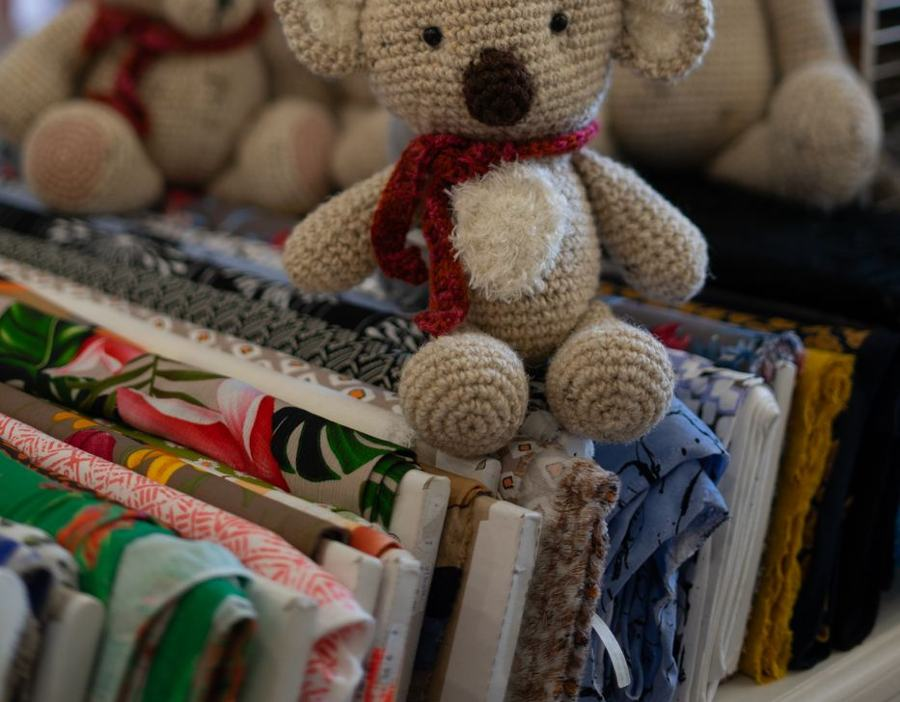
Stoffen
Basisstoffen zoals katoen, tricot en voering, en een kleine collectie van de nieuwste modestoffen.
Meer info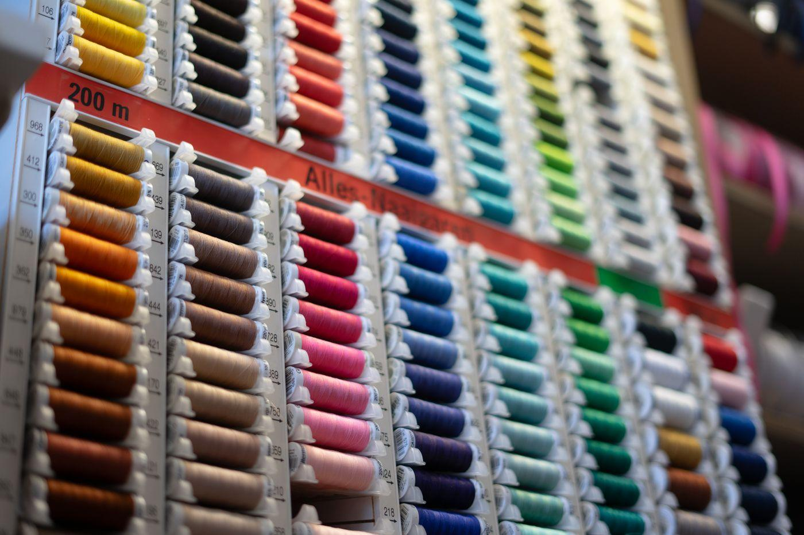
Stoffen, garen, wol en fournituren in ons winkeltje aan de Eendrachtsweg. Al sinds 2011, met parkeren voor de deur.
Van knopen, ritsen en garen tot stoffen, Scheepjeswol en de nieuwste patronen.

Basisstoffen zoals katoen, tricot en voering, en een kleine collectie van de nieuwste modestoffen.
Meer info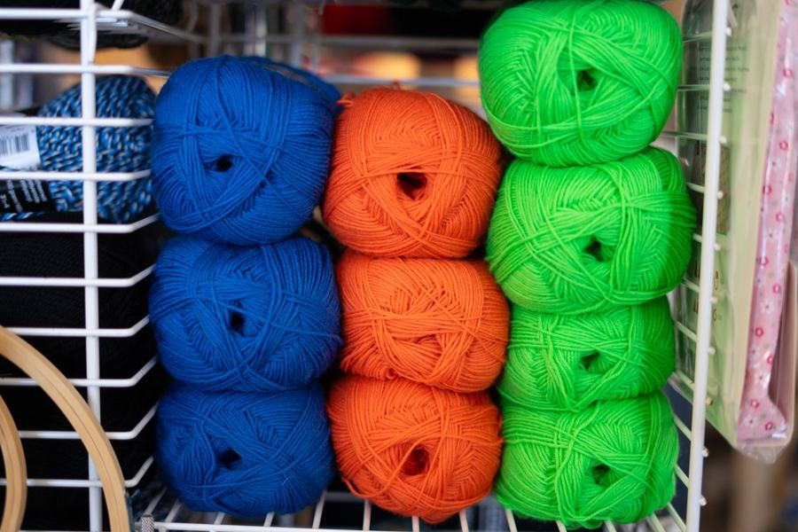
Een grote collectie van Scheepjeswol, met de bijbehorende patroonboeken.
Meer info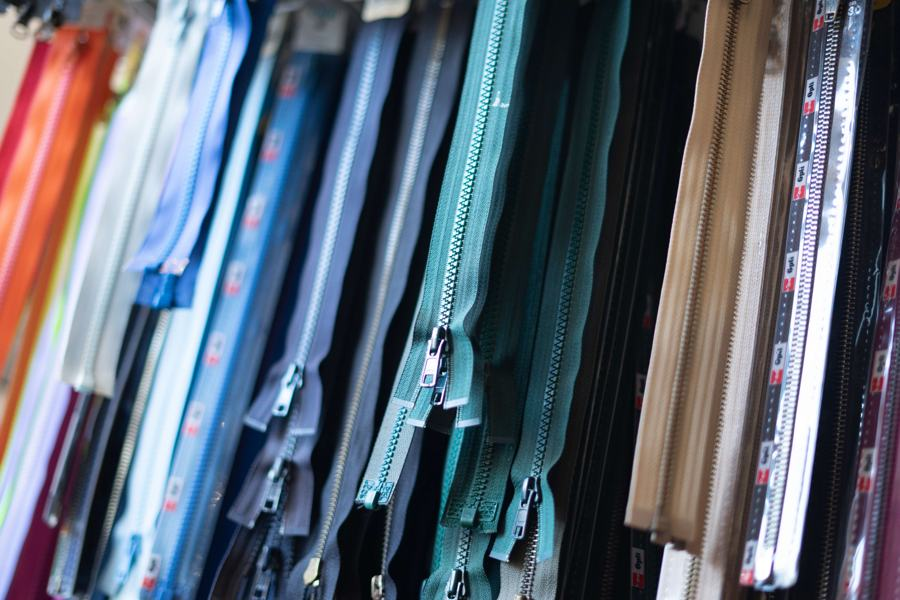
Knopen, ritsen, garen, lint, kant, elastiek, naalden en applicaties.
Meer info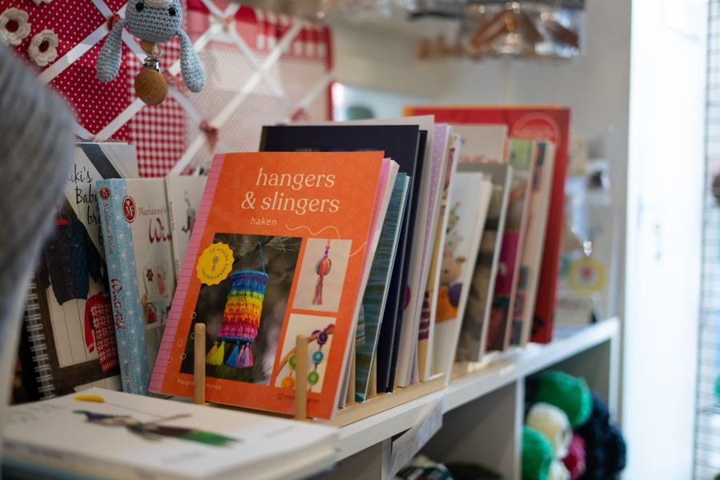
De nieuwste Knipmode, B-trendy en My Image, en veel hobbyboekjes om te haken en te breien.
Meer infoProfessionele reparaties. Breng uw machine gerust langs voor een check-up.
Samen met stomerij De Gagel uit Bergen op Zoom. Ophalen op woensdag en vrijdag. Vooraf een indicatie van de kosten kan.
Regelmatig lessen in de winkel, ook haken en (sokken) breien. De data staan op onze Facebook.
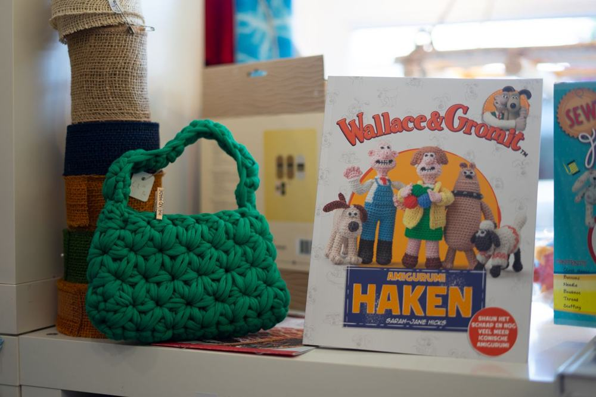
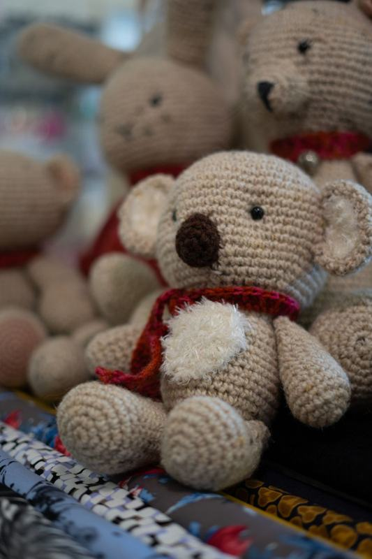
Sinds 2016 hebben we een handwerkcafé. Iedere donderdagmiddag in de oneven weken, met vrije in- en uitloop en deskundige begeleiding. De enige verplichting is een consumptie, verder zijn er geen kosten.
Geen vervoer? Bel Anja op 06 13 36 61 50, wij proberen dan vervoer te regelen.
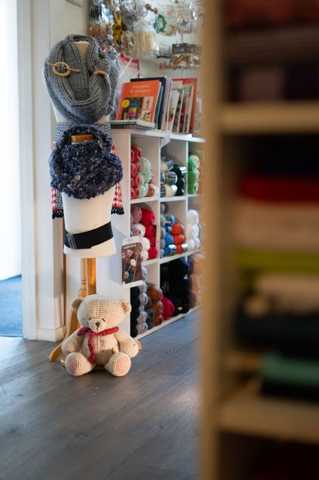
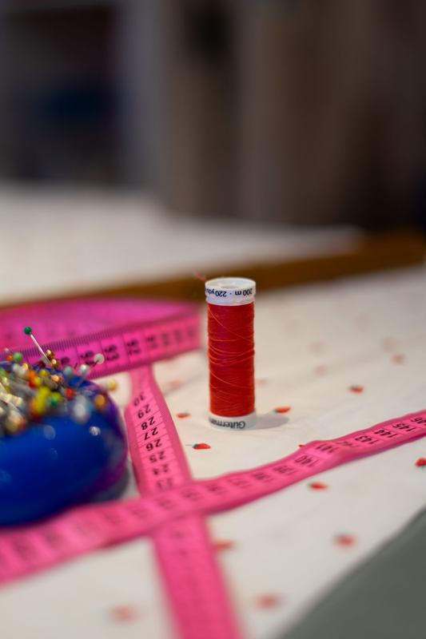
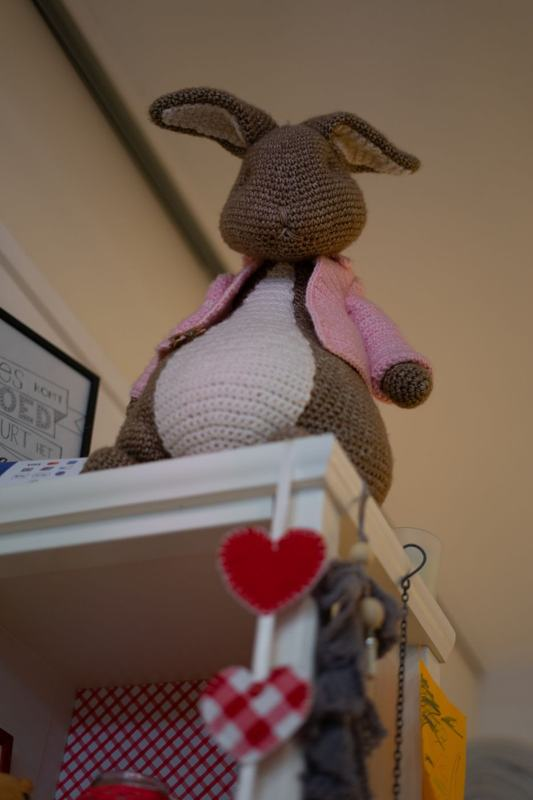
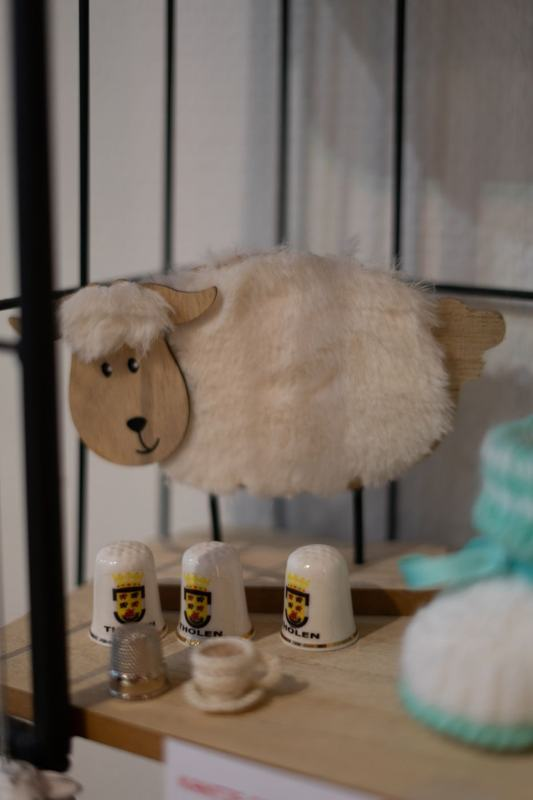
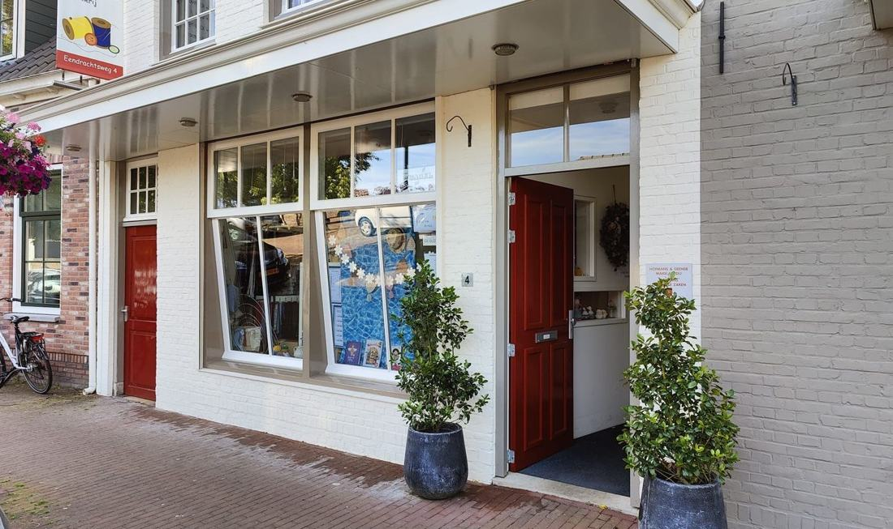
"Niet te snel iets weggooien, er is altijd nog wel iets aan te doen!"
Sinds 21 maart 2011 vindt u ons in het pandje aan de Eendrachtsweg 4. Een gezellig winkeltje waar van alles te koop is voor de zelfmaakmode.
Vraag over een stof, patroon of reparatie? Bel of app ons gerust.
Parkeren kan voor de deur (blauwe zone).
| Maandag | gesloten |
| Dinsdag | 9.30 - 17.00 |
| Woensdag | 9.30 - 17.00 |
| Donderdag | gesloten |
| Vrijdag | 9.30 - 17.00 |
| Zaterdag | 9.30 - 16.00 |
| Zondag | gesloten |
Handwerkcafé: donderdagmiddag in de oneven weken, in De Vlinderbloem.